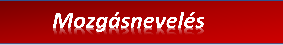
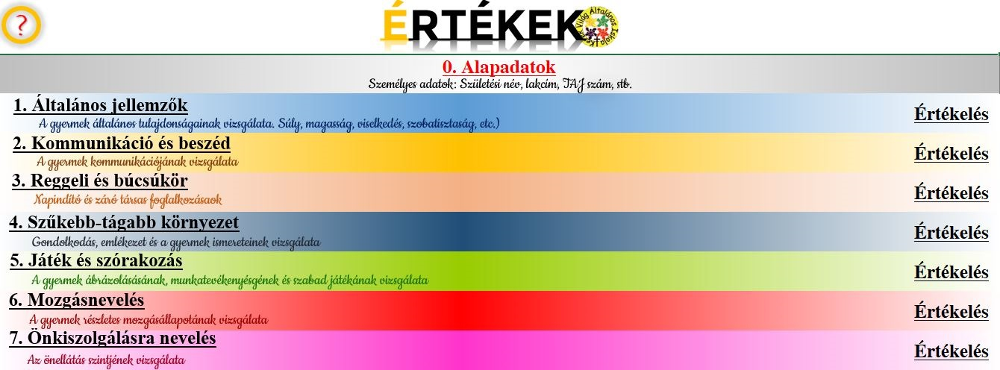

Több évtizedes tapasztalattal szerzett szakmai anyagunkat 7 nagy témakör szerint rendszereztük. Ezek bomlanak a kérdőívben haladva nagyobb kategóriákra, azok pedig alkategóriákra. Hogy minden egyes részletet testre szabhasson leendő értékelésén.




Amennyiben érdeklik kategóriáink és alkategóriáink, kattintson a "PROGRAMRÓL" menüpontra, majd a letöltésre. Töltse le és telepítse demo verzionkat, ahol szemrevételezheti a teljes szakmai anyagot.
Szakmai észrevételeket az ertekek@info.hu-ra várjuk.
ÁLTALÁNOS JELLEMÉS
-
A gyermek általános tulajdonságainak vizsgálata. Súly, magasság, viselkedés, szobatisztaság, etc
Kommunikáció és beszéd
-
A gyermek kommunikációjának és beszédkészségének vizsgálata
Reggeli és búcsúkör
-
Napindító és záró társas foglalkozásokon való részvétel vizsgálata
Szükebb tágabb környezet
-
Gondolkodás, emlékezet és a gyermek ismereteinek vizsgálata
JÁTÉK ÉS SZÓRAKOZÁS
-
Az ábrázolás, munkatevékenység és szabad játék vizsgálata
Mozgásnevelés
-
A mozgásállapot gyógytornászait felmérése, fizikai jellemzők, továbbá a mozgásnevelés órákon való részvétel vizsgálata
Önkiszolgálásra nevelés
-
Az önellátás szintjének vizsgálata